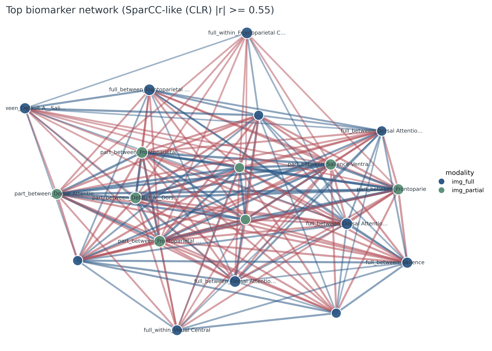
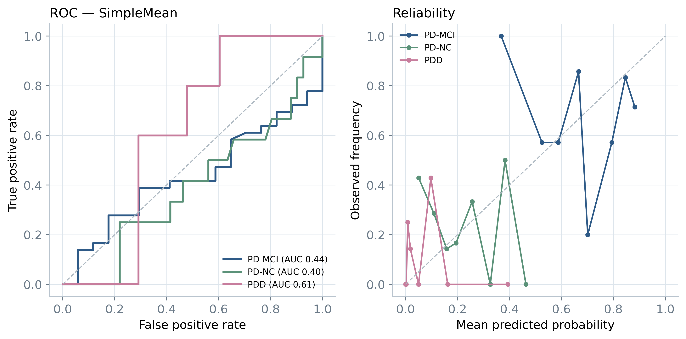
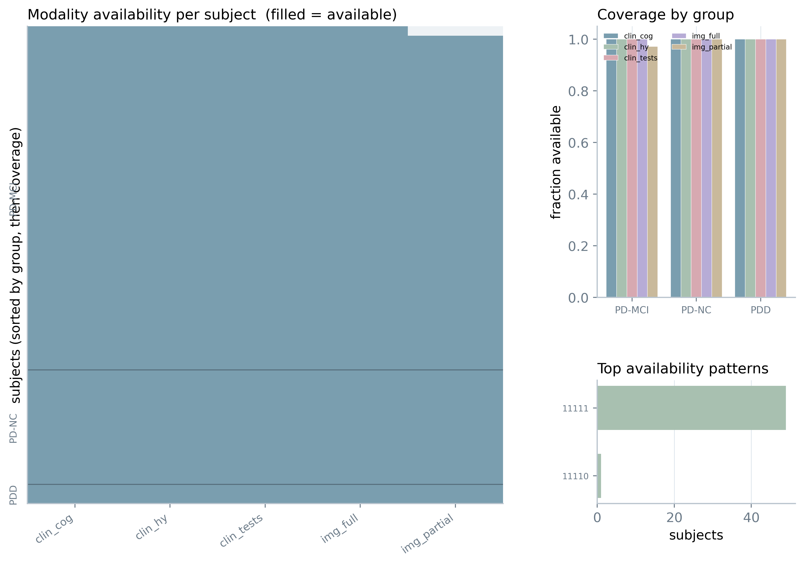
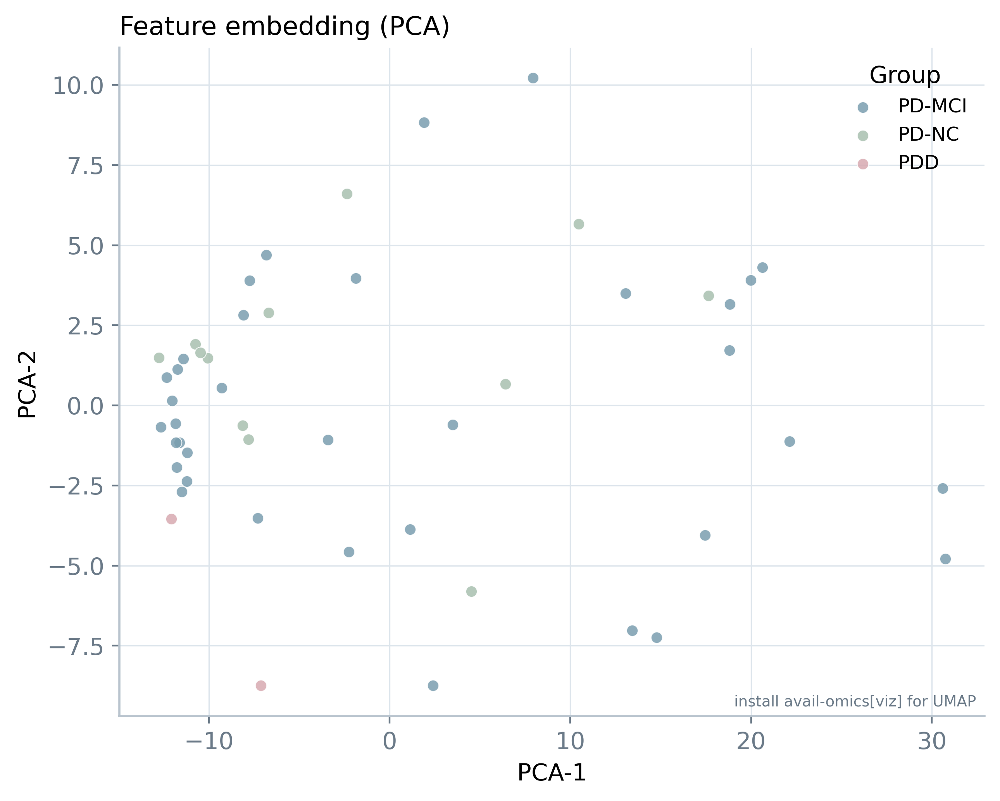
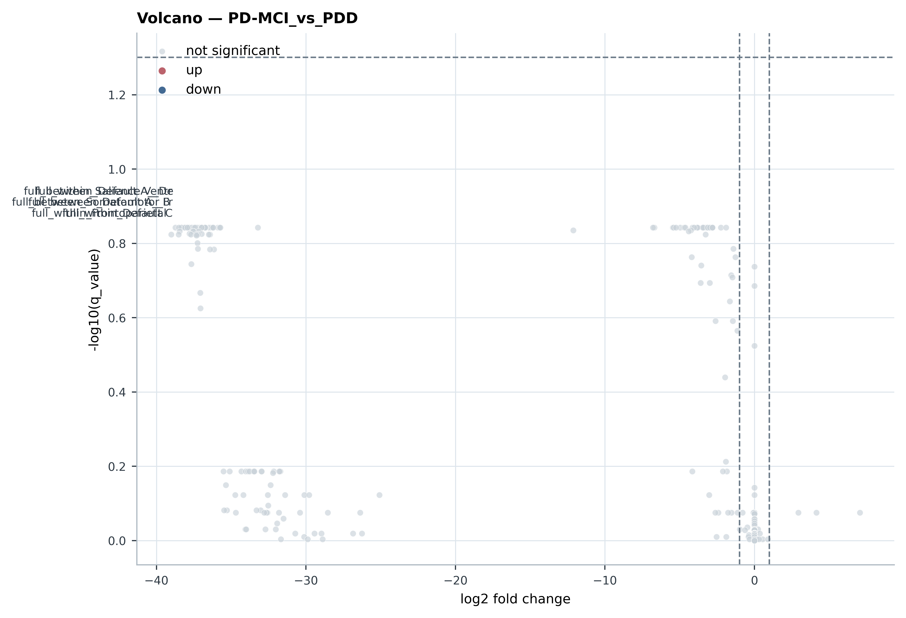
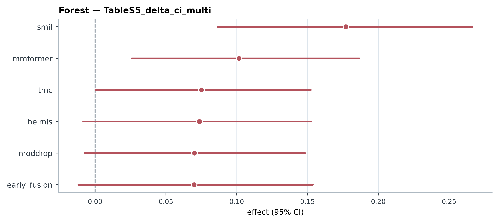
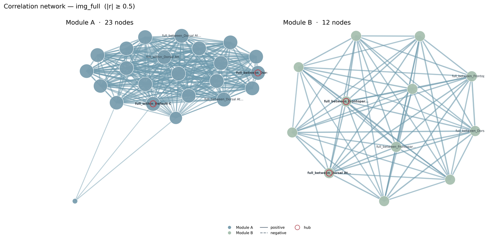

AVAIL soft-palette visualization gallery
Illustrative figures generated by avail-omics plot from the public
OpenNeuro ds004392 excerpt and an aggregate effect-size table. Values change
with your own results.
1 · Network
PDF

2 · ROC / calibration
PDF

3 · Availability
PDF

4 · UMAP / PCA
PDF

5 · Volcano
PDF

6 · Forest
PDF

7 · Module network
PDF

← project page